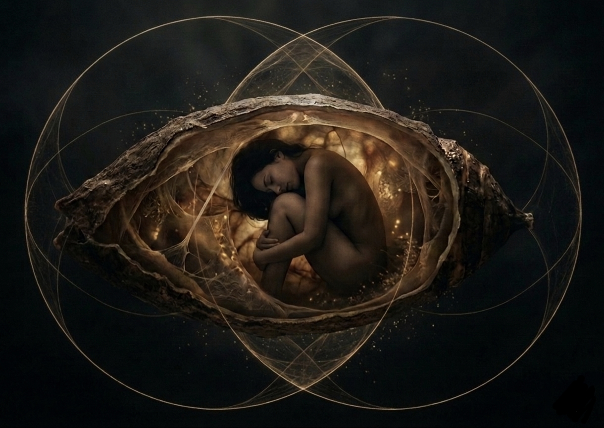

The Body as the King's Chamber
Most people are taught to fight their bodies. But transformation does not happen through war. It happens through compassion. Without compassion for the body, you will be conformed by it instead of transformed through it.
Most people are taught to fight their bodies. To override pain. To ignore signals. To push through exhaustion. To treat the body like an obstacle that must be conquered.
But transformation does not happen through war. It happens through compassion.
Without compassion for the body, you will be conformed by it instead of transformed through it.
When the body is treated as a burden, an enemy, or a battleground, it becomes the filter through which all perception is shaped. But when the body becomes an ally, something different happens. Its signals become messages instead of threats. Its tension becomes information instead of failure. Its pain becomes a call to re-pattern instead of punishment.
The Body Is the First Mirror
Your body is not just a vessel. It is your first interface with reality. Every belief, trauma, memory, and interpretation passes through the body. The level of safety in your nervous system determines how you interpret the world. That interpretation becomes the world you experience.
Your relationship with your body is the root tone of your reality.
Embodied Cognition
Modern neuroscience confirms something ancient traditions understood intuitively: the mind is not confined to the brain. Your nervous system distributes intelligence throughout your entire body. Your thoughts shape your physiology. Your physiology shapes your thoughts. It is a continuous feedback loop.
You do not see the world as it is. You see the world as your nervous system allows you to perceive it. When the body is dysregulated through trauma, stress, or chronic threat, perception collapses into survival modes: fear, control, defensiveness, numbness. Higher perception becomes inaccessible.
The Observer
At the center is you. The observer. You are not your body. You are not your thoughts. You are the awareness that perceives them. The clarity of this observation depends on three things:
- The state of your body (regulated or dysregulated)
- The patterns of your thoughts (renewed or conditioned)
- The orientation of your spirit (love or fear)
When the observer is scattered or hijacked, perception distorts. When the observer is seated, perception clarifies.
Romans 12:2, A Blueprint for Consciousness
“Do not be conformed to this world, but be transformed by the renewing of your mind.”
This verse is often interpreted as moral instruction. But psychologically, it describes a transformation of perception. Renewal of the mind means re-patterning perception. Transformation begins within the observer, not the environment.
The Body as the King's Chamber
Inside the Great Pyramid of Giza lies a space known as the King's Chamber. It is not decorated. It contains no elaborate carvings. Instead, it is a resonant cavity, its geometry, stone composition, and acoustic properties create a chamber that amplifies vibration and resonance.
Symbolically, the human body functions the same way. Your cranial vault, spine, and heart field create a vertical resonant axis. Your biology encodes mathematical ratios found throughout sacred architecture and nature: π, φ, √5. These harmonic relationships appear in cellular growth, DNA structure, and neural branching patterns.
When awareness is scattered, the body becomes a sealed tomb. When awareness is enthroned, the body becomes a tuned temple.
The Chrysalis
When a caterpillar enters the chrysalis, much of its body dissolves into a nutrient-rich cellular soup. Yet the butterfly was never absent. Inside the caterpillar already exist tiny clusters of cells called imaginal discs, dormant cells that contain the blueprint for wings, eyes, antennae, and legs. As the caterpillar dissolves, the imaginal cells activate and reorganize the dissolved material into a completely new form.
The same process happens psychologically and spiritually. Old identities dissolve. But latent potentials, long encoded within us, begin to organize.
Compassion as the Key
The chrysalis is a sealed chamber of transformation. So is your body. But the difference between metamorphosis and collapse is compassion. Without compassion, dissolution feels like terror. With compassion, the observer remains seated. Somatic signals become messages. Grief becomes honored rather than suppressed. The old identities can be acknowledged as former protectors:
“Thank you for serving me. It’s safe to release now.”
Your body is not an obstacle to consciousness. It is the chamber that allows consciousness to take form. When consciousness is enthroned within a compassionate, regulated body, the chamber activates. Perception clarifies. And transformation begins to unfold naturally, not through force, but through alignment.
Your body becomes the living chrysalis. And the observer within becomes the architect of what emerges.